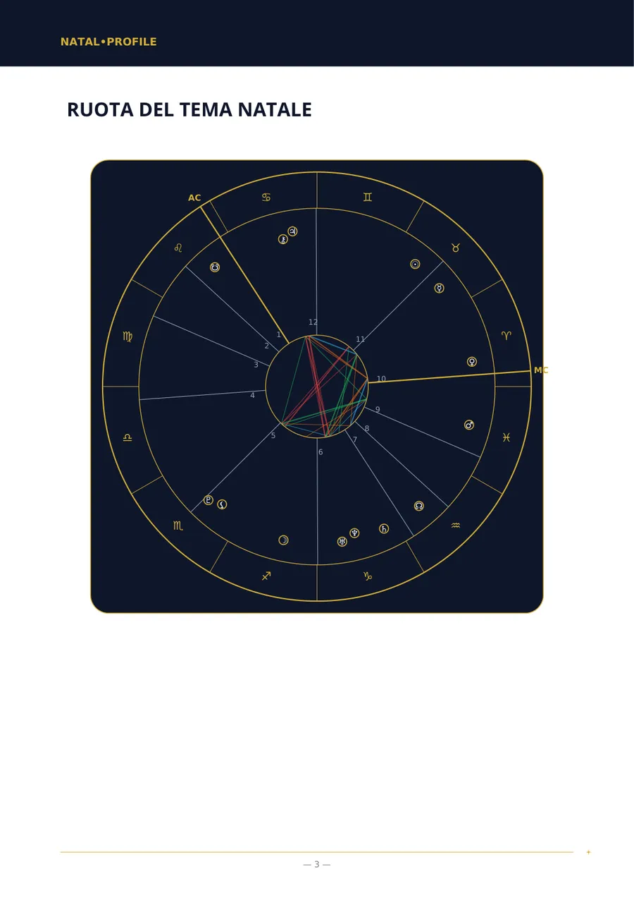
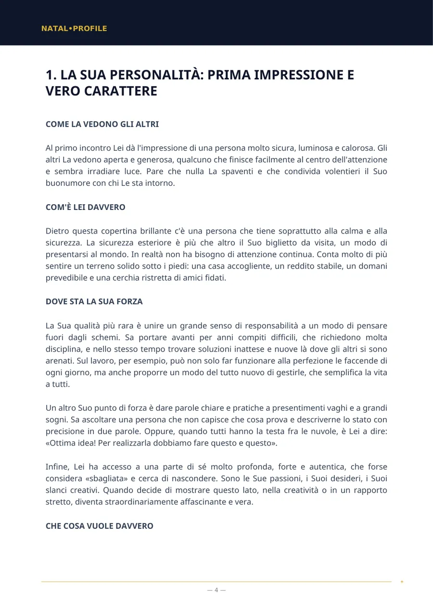
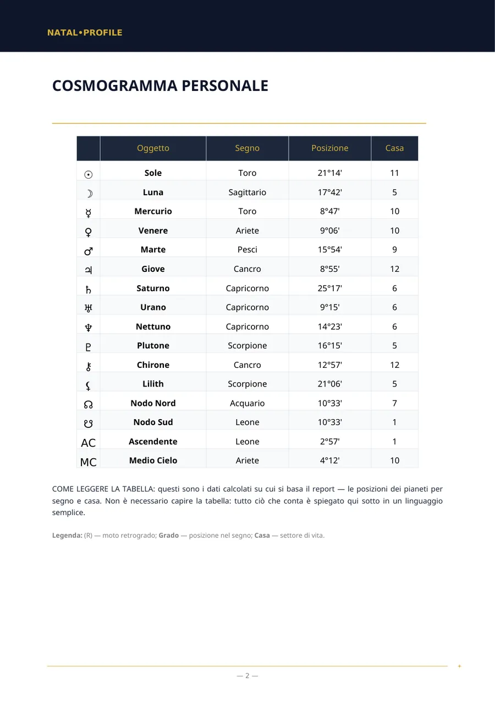
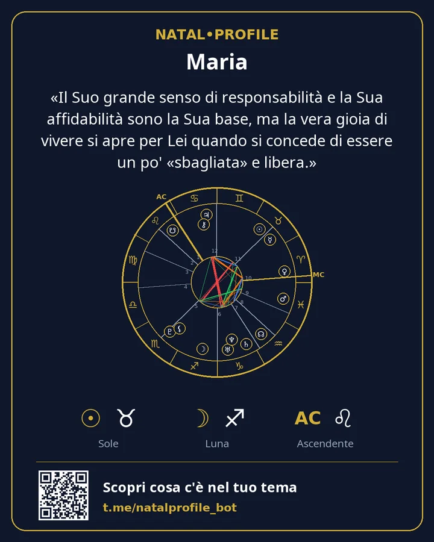

Il tuo tema natale, spiegato in parole semplici
Inserisci data, ora e città di nascita e in pochi minuti ricevi un PDF: com'è il tuo carattere, dov'è la tua forza, cosa ti frena e da dove cominciare. Senza gergo e senza frasi generiche sul segno.
- Calcolo con le Effemeridi Svizzere
- 15 lingue
- Nessun abbonamento
Due calcoli veloci
Avvengono nel tuo browser. Nulla viene inviato o salvato.
Segno solare ed elemento
Analizza tutto il tema →Il segno solare è uno delle decine di punti di un tema. Un report considera tutti i pianeti, le case e i legami tra loro.
Numero del percorso di vita
Ricevi l'analisi numerologica →Calcolato come nel report del bot: le cifre della data si sommano fino a ottenerne una sola. I numeri del nome si calcolano nel bot.
Com'è fatto un report
Pagine reali del report «Tema natale». È un esempio: i dati di nascita sono inventati.




«Il Suo grande senso di responsabilità e la Sua affidabilità sono la Sua base, ma la vera gioia di vivere si apre per Lei quando si concede di essere un po' «sbagliata» e libera.»
Cosa puoi ordinare
Gli elenchi dei capitoli nelle pagine dei report sono quelli che ricevi nel PDF. I prezzi sono in Telegram Stars.
Tema Natale (Analisi Completa)
Un'analisi completa del tuo carattere da data, ora e luogo di nascita.
Tema Natale (Analisi di Base)
Un'analisi del tuo carattere quando l'ora di nascita è sconosciuta.
Analisi di Compatibilità (Completa)
Due persone: cosa vi ha attratti, dove siete in disaccordo e cosa vi date a vicenda.
Analisi di Compatibilità (Base)
Compatibilità dei caratteri quando l'ora di nascita è sconosciuta.
Analisi di Carriera e Finanze
In cosa sei forte nel lavoro, quali attività fanno per te e come gestisci il denaro.
Tema del Bambino — una guida per capire meglio tuo figlio o tua figlia
Di cosa ha bisogno tuo figlio per sentirsi sereno e in cosa sostenerlo.
Previsione Annuale (Solar Return)
I temi del tuo anno, da compleanno a compleanno, con periodi datati.
Oroscopo del Giorno
Una previsione per oggi basata sull'ora esatta degli aspetti della Luna.
Numerologia da Nome e Data di Nascita
I numeri del tuo nome e della tua data di nascita secondo il sistema pitagorico.
Carta Vedica (Jyotish)
Una carta vedica: lagna, graha, nakshatra e periodi dasha.
Come funziona
Dal primo messaggio al file pronto in pochi minuti.
Apri il bot
In Telegram, senza registrazione né password.
Inserisci i dati
Nome, data, ora e città di nascita. La città si sceglie da un elenco.
Ricevi il PDF
Di solito entro 5 minuti. Il file arriva in chat.
Conserva la card
Un'immagine con il tuo tema e la frase chiave del report.
Pagamento
I report si pagano con Telegram Stars direttamente nella chat con il bot. Non c'è abbonamento: paghi una volta per report.
Il primo capitolo dell'analisi natale con il tuo tema e un oroscopo del giorno: una volta ciascuno, senza pagare.
Paghi un report e ricevi un link. Il tuo amico lo apre, inserisce i propri dati e riceve l'analisi.
Nel bot c'è l'aiuto «Non riesci a pagare?» e il supporto risponde su Telegram.
I tuoi dati
Data, ora e luogo di nascita servono solo per calcolare il tema e scrivere il report.
Quando il PDF è stato inviato, nome, data, ora e luogo di nascita vengono cancellati.
Il PDF rimane sul server per 24 ore e poi viene eliminato. A te resta nella chat.
I calcolatori funzionano nel tuo browser. Il sito non ha moduli, registrazione né tracker.
Domande frequenti
Non conosco la mia ora di nascita. Cosa faccio?
Scegli un report «senza ora di nascita». Esclude case e ascendente, ma carattere, emozioni, modo di pensare e relazioni vengono descritti anche senza.
In cosa è diverso da un oroscopo per segno?
Un oroscopo per segno usa solo la posizione del Sole. Un report calcola tutti i pianeti, le case e i legami tra loro per la tua data, ora e luogo di nascita.
Chi scrive il testo del report?
Le posizioni planetarie sono calcolate da un software con le Effemeridi Svizzere. Poi un modello linguistico scrive il testo a partire da quei calcoli seguendo regole fisse.
In quali lingue sono disponibili i report?
In quindici: inglese, russo, spagnolo, hindi, portoghese, vietnamita, turco, indonesiano, uzbeko, kazako, francese, tedesco, italiano, arabo e persiano.
Posso avere un rimborso?
Il report viene creato personalmente per te, perciò il pagamento non viene rimborsato dopo la consegna del PDF. Se un report non è stato generato per colpa nostra, il rimborso è totale.
Inizia dal capitolo gratis
Calcoliamo il tuo tema e ti inviamo il primo capitolo dell'analisi vera. Se ti piace, prendi quella completa.